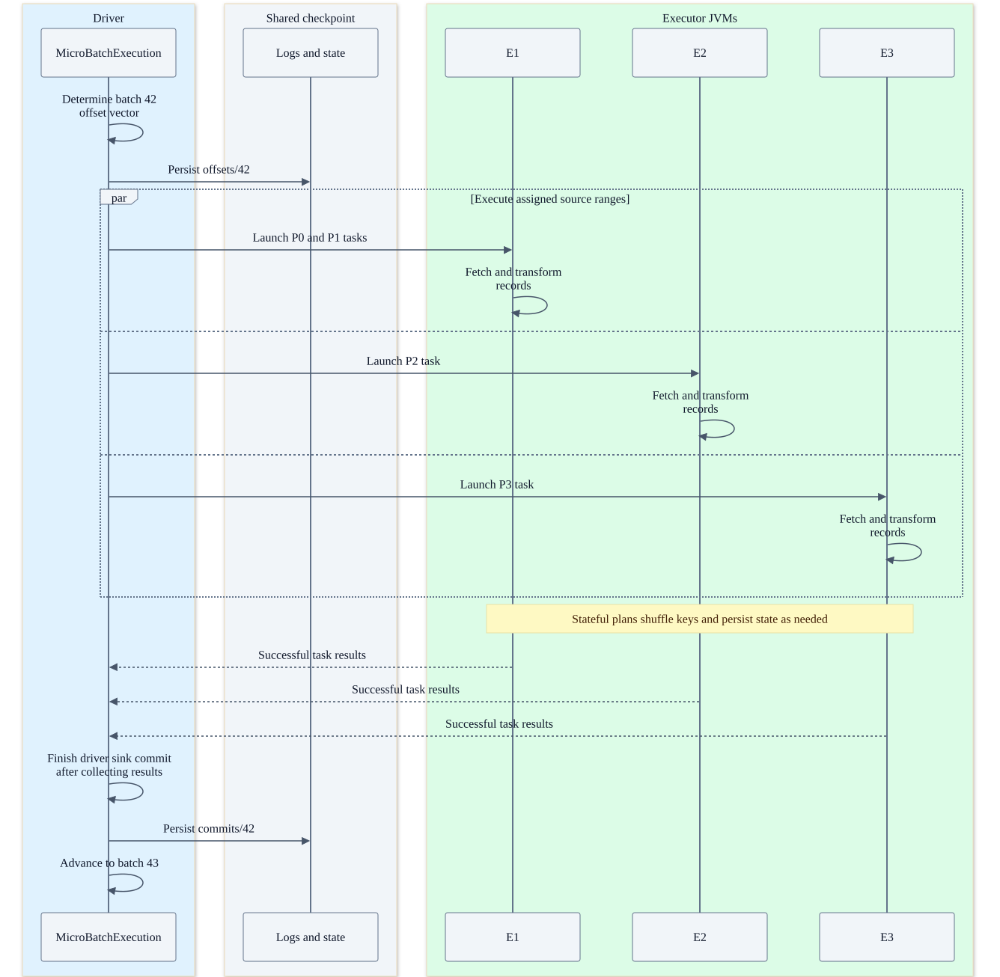
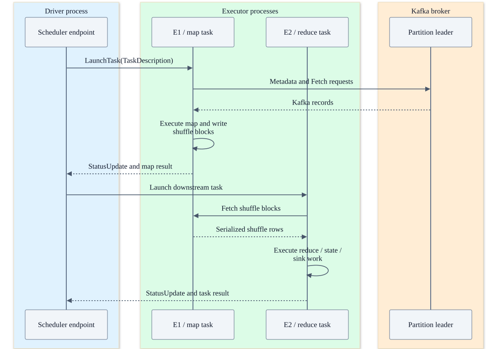

Chapter 25 · Source-backed Spark deep dive
Spark: driver, executors and Kafka reads
Follow a Kafka record through driver planning, parallel executor tasks, shuffle, state and output. Every process and networking boundary is tied to the Spark checkout you supplied.
Before the detail
The mental model
The driver chooses ranges of input; executor tasks read them. A shuffle can repartition those rows into different state owners before output.
Worked example: connect the system view to the code
Four Kafka partitions can yield four ordinary source tasks, placed on three executors. Those tasks may feed two state partitions. Losing E2 moves task attempts; it does not renumber Kafka partitions or turn state partition 0 into Kafka P0.
- Plan source ranges
KafkaMicroBatchStream creates input partitions from the driver’s boundaries.
- Run task attempts
Executor runs work in its task thread pool.
- Load operator state
StateStoreRDD opens the required operator-partition state.
Illustrative reasoning example using this chapter's source scope; not a recorded deployment or executed experiment.
Does Kafka group assignment decide which executor reads a range?
No for this source path. Spark plans tasks and its readers explicitly assign/seek Kafka partitions.
Choose a reading path · Terms and progress boundaries · Clarity review
Start with the process map
One driver owns the streaming query’s progress. Several executor JVMs run the work the driver schedules. Kafka brokers retain the input, checkpoint storage retains recovery information, and the sink retains output. These systems communicate through different protocols and commit different kinds of state.
| Component | Runs where | Responsibility |
|---|---|---|
| StreamExecution / MicroBatchExecution | Driver query execution thread | Choose each batch’s offset vector, plan work, execute the sink and publish batch completion |
| DAGScheduler / TaskSchedulerImpl | Driver scheduling machinery | Turn the physical plan into stages and task attempts; place tasks on available executor resources |
| Executor / TaskRunner | Many executor JVMs and task-pool threads | Read assigned ranges and execute transformations, shuffle, state and sink writes |
| Kafka consumer / producer | Inside executor tasks or their client pools | Fetch input directly from brokers and send output directly to the destination Kafka brokers |
| StateStore provider | Executor-local working state plus shared checkpoint storage | Load a specific state version and persist the next state version for each operator partition |
| Cluster manager / deployment | Kubernetes, YARN or another configured deployment | Provide executor processes/resources and the driver restart policy; this is separate from query checkpointing |
One driver, several executors, three durable systems
Illustrative three-executor placement. Kafka payloads travel directly to executor readers. The cluster manager supplies processes/resources; Spark schedules tasks within them.

Diagrams use three executors as an example. Executor placement can change between task attempts; a task box is not a permanent Kafka owner or a separate pod. A Kubernetes executor pod commonly contains one executor JVM with multiple task slots and client instances.
This chapter follows the ordinary synchronous microbatch path with the V2 Kafka reader, which is used by default in the inspected test. A configurable V1 fallback uses KafkaSource and KafkaSourceRDD. Both use Spark checkpoint progress. KafkaRDD belongs to legacy DStreams, not this fallback. Continuous processing, asynchronous progress tracking and RealTimeTrigger have separate timing; see the mode comparison in the recovery chapter.
One batch, four Kafka partitions, three executors
Use batch 42 throughout the examples. Batch 41 completed with next offsets {P0:120, P1:200, P2:90, P3:50}. The driver chooses batch-42 end offsets {P0:180, P1:240, P2:115, P3:70}. Each range includes its start and excludes its end.
Kafka partitions map to input tasks, not fixed executors
Worked range placement for one batch. Start inclusive, end exclusive. minPartitions or maxRecordsPerPartition can split one Kafka partition into more than one input task; this picture uses the unsplit case.

| Input range | Example task placement | What persists for recovery |
|---|---|---|
| orders-0 [120,180) | Task A on E1 | The source’s start/end vector and required state version; E1’s identity is not the resume cursor |
| orders-1 [200,240) | Task B on E1 in another slot | Its partition boundary in the same batch offset vector |
| orders-2 [90,115) | Task C on E2 | The same range can be retried on E3 or a replacement executor |
| orders-3 [50,70) | Task D on E3 | Completion belongs to the batch, not a Kafka commit from E3 |
With the ordinary unsplit scan there is one source task per nonempty Kafka partition. minPartitions and maxRecordsPerPartition can produce several disjoint input ranges from one Kafka partition. If eight tasks are planned and the cluster has six available task slots, some tasks wait for a slot. Adding executors does not change the durable input offsets or create additional Kafka partitions.
Keep four counts separate: Kafka partitions, planned source ranges, shuffle/state partitions, and executor task slots. An offset span is also not always a user-record count: control records, compaction and transactions can create gaps or hide records under read_committed.
A successful microbatch across three executors
Default synchronous microbatch. Each executor may run several task attempts. The checkpoint stores an offset vector for the whole source, not a separate completion cursor for each executor.

Within the ordinary query loop, batch 42 runs before batch 43 is constructed for execution. Parallel tasks inside batch 42 provide concurrency; they do not turn that loop into independent per-executor checkpoint streams. The planned offset log is written before distributed work, and the completion log follows successful sink execution.
Driver: source discovery, admission control and physical planning
V2 read path: driver planning to executor fetch
Exact class families from the pinned source. V1 KafkaSource/KafkaSourceRDD has an alternate scan path, covered in the notes; checkpoint ownership is the same.

| Step | Method / component | What actually happens |
|---|---|---|
| Create the query | StreamExecution.start / QueryExecutionThread | Start the driver-side stream loop. The application caller is not the executor task thread. |
| Initialize source | KafkaMicroBatchStream.getOrCreateInitialPartitionOffsets | Read source initial metadata if present; otherwise apply startingOffsets/timestamp policy and persist the initial vector. |
| Determine next end vector | MicroBatchExecution.constructNextBatch → KafkaMicroBatchStream.latestOffset | Discover current source offsets and apply read limits such as maxOffsetsPerTrigger. |
| Discover Kafka boundaries | KafkaOffsetReaderAdmin → Admin.listOffsets | Driver contacts Kafka for metadata/offset boundaries; the deprecated consumer offset reader is a configuration-dependent alternative. |
| Declare the batch | MicroBatchExecution.markMicroBatchStart → offsetLog.add | Atomically publish the chosen input end vector and batch timing/watermark metadata. This log stores boundaries, not copies of Kafka payloads. |
| Plan the scan | KafkaMicroBatchStream.planInputPartitions | Resolve [start,end) ranges and construct KafkaBatchInputPartition objects with reader settings. |
| Plan operators | MicroBatchExecution.runBatch / IncrementalExecution | Build the physical plan, exchanges, state information and sink execution for this batch. |
| Schedule work | DAGScheduler → TaskSchedulerImpl | Create stage tasks and choose executor slots. Cluster resources and data locality affect placement. |
The driver does not collect every source record and then distribute it. It sends task descriptions that reference the required source range and physical work. Executors fetch the actual Kafka records. The V2 write path’s nextBatch.collect() in the runtime forces distributed write execution; it does not make the driver the Kafka data sink.
Fresh start, restart and newly discovered partitions
startingOffsets selects a fresh source position. Once the source initial offset file and batch logs exist, restart reuses checkpoint progress. Changing that option does not reset the existing query. Source metadata such as sources/0/0 and engine end-offset logs such as offsets/42 serve different purposes.
Partition discovery can change the source offset vector. The offset reader resolves newly added and deleted partitions and applies data-loss policy where relevant; this is not executor group rebalancing. The inspected AvailableNow failure test covers an unfinished batch and a changed Kafka partition set. Preserve checkpoint compatibility when changing source subscriptions or query structure.
Executor: reader, consumer pool, iterator and task thread
| Layer | Low-level path | Ownership and behavior |
|---|---|---|
| Control receipt | CoarseGrainedExecutorBackend receives LaunchTask | Decode a TaskDescription and delegate to Executor; the RPC handling thread does not execute the whole query. |
| Task execution | Executor.launchTask → TaskRunner → threadPool | A pool thread runs the task and its RDD/physical operator iterator. Several tasks can run in one JVM. |
| Scan iterator | DataSourceRDD.compute → reader factory | Create the partition reader for the planned InputPartition, with task completion cleanup. |
| Kafka range reader | KafkaBatchPartitionReader.next | Read within this range and project ConsumerRecord data into Spark rows. Its cursor advances as records are delivered. |
| Consumer acquisition | KafkaDataConsumer.acquire | Borrow a client with pool key (group.id, TopicPartition); parameters are checked separately. Pool/fetched-data reuse avoids repeated setup. |
| Network read | InternalKafkaConsumer.createConsumer → KafkaConsumer.assign; seek → poll | Assign a topic partition explicitly, seek to Spark’s requested offset and fetch from the Kafka leader. |
| Reattempt | KafkaDataConsumer task-attempt handling | Invalidate failed-attempt cache state and acquire suitable client state for rereading the range. |
| Finish | ExecutorBackend.statusUpdate(FINISHED, result) | Return task result/commit information to the driver; this is not a Kafka source OffsetCommit. |
assign gives this reader explicit partition access. The Kafka consumer group coordinator does not distribute these Spark source tasks across executors. A group.id may identify clients or support Kafka authorization; it does not replace the Spark scheduler or checkpoint cursor.
Pool reuse is an optimization with task-attempt rules. It does not mean one consumer is called concurrently by all tasks. The inspected consumer test specifically exercises several tasks reading different ranges of the same topic partition inside one executor, and the retry test checks invalidation/new-instance behavior.
Narrow transformations can run in the same task iterator without another remote process hop. An exchange creates a new partitioning/stage boundary. Stateful operators and output tasks may then execute on different executors from the source scan.
Network and RPC boundaries
Three network paths carry different things
Task RPC carries serialized work and task status. Kafka connections carry input records. Shuffle transfers exchange data between executor-side tasks; the driver tracks where blocks can be fetched.

| Plane | Payload / calls | Failure handling |
|---|---|---|
| Spark control RPC | Executor registration, LaunchTask, StatusUpdate, heartbeats and coordinator messages over Spark RpcEnv/Netty | Scheduler detects lost executors/task results and retries work under configured limits. |
| Kafka input/output protocol | Metadata, ListOffsets, Fetch, Produce and their responses over Kafka client connections | Kafka client refreshes broker/leader metadata and retries eligible requests. Spark retries tasks/batches separately. |
| Shuffle block transfer | Serialized map output rows, fetched using shuffle client/Netty from executors or configured shuffle service | Missing blocks cause FetchFailed and stage/map-output recomputation. |
| Checkpoint filesystem I/O | Offset/commit metadata files and state deltas/snapshots/changelogs | Storage errors can fail the task/query; recovery needs an intact compatible checkpoint. |
| State coordination RPC | Active provider location and coordination metadata | Driver location memory helps placement; the checkpoint provides recoverable state contents. |
Kafka protocol calls are not Spark RPC messages. Spark task status is not a Kafka group offset acknowledgement. Shuffle files are not replicated Kafka logs. If a broker leader changes, executor clients recover the Kafka connection while keeping Spark’s requested range; if an executor disappears, Spark can schedule that range on another process.
An external shuffle service can continue serving local shuffle files after an executor process exits. Losing the worker host/disk can still lose those blocks. Default microbatch recovery recomputes missing map outputs when needed; an executor heap or local shuffle directory is not a substitute for durable source retention and checkpoint storage.
Transform, shuffle, state and sink are separate stages of progress
For groupBy(customerId).count(), source partition ordering does not by itself put all records for a customer in one state partition. The physical plan exchanges rows using the configured key partitioning. The reducer/state tasks update the state for the keys they receive.
Aggregation changes the partitioning boundary
Example customer-key aggregation. Source tasks have Kafka partition ranges; state tasks have hash-partitioned keys. State partition 0 and Kafka partition 0 are different identities.

In this example the four source tasks feed two state partitions. Batch 42 loads state version 42 and persists version 43. The state-store identity uses checkpoint location, operator ID and state partition ID, with query-run provider identity and optional checkpoint IDs. State partition 0 is unrelated to Kafka partition 0.
StateStoreRDD asks for preferred locations where a state provider is already loaded. That can reduce cold-load latency, but placement is not permanent. A task moved from E2 to E3 opens the same required durable operator-partition state rather than receiving E2’s JVM heap. The state partition count can be restored from checkpoint metadata and must remain compatible with the recovered plan.
State is persisted per task/operator partition. Its next version can exist while another task is still running or the overall batch later fails. Only the query completion log establishes that the batch and its sink execution completed. Follow the exact state replay example.
Empty input, latency and throughput
No new input can still require a stateful batch
constructNextBatch considers new offsets and lastExecution.shouldRunAnotherBatch. Watermark/timeout work can require a batch with unchanged input offsets. This is different from losing source data.

No new source rows and no data loss are different situations. constructNextBatch can schedule a batch with unchanged offsets when stateful timeout/watermark work needs it. If neither new input nor another stateful batch is required, the query waits for another trigger. A no-data batch can still have state, sink and checkpoint consequences.
| Tuning dimension | Effect | Tradeoff |
|---|---|---|
| Trigger interval | Sets when the query checks/schedules the next microbatch | Short intervals reduce waiting but add planning, scheduling and checkpoint overhead. A slow batch still delays subsequent ordinary batches. |
| maxOffsetsPerTrigger | Limits chosen source offset spans across partitions | Bounds batch work approximately; it is not an exact visible-record count or byte budget. |
| minPartitions / maxRecordsPerPartition | Creates more source ranges/tasks from large partitions | Can increase parallelism; adds scheduling, client and task overhead. |
| Executor slots | Permits more independent task attempts at once | Source/shuffle/state partitioning and skew still constrain useful concurrency. |
| Shuffle/state partitioning | Distributes aggregation/join work | More partitions can reduce per-task size but add metadata/files/coordination; recovery must preserve compatible state layout. |
| Warm state/consumer cache | Avoids repeated setup or cold state loads | Cache loss increases recovery latency without being the authoritative loss of durable state. |
Useful batch-time decomposition: offset discovery + planning/log publication + source/shuffle/state/sink critical path + completion-log publication. It is not the sum of every executor’s CPU time: many tasks overlap, and the slowest required task/stage often determines completion latency. Track input rates, batch duration, offsets and state-store load/commit metrics alongside executor/task failures.
For a presentation, keep the ownership chain visible: driver chooses a vector → tasks run on executor slots → any exchange repartitions keys → state/sink operations succeed → driver records batch completion. Then use the recovery chapter to place a failure between any two arrows.
Pinned code, inspected tests and validation scope
Pinned tracked Apache Spark source: f9358a5587a2d512c5cf08ba4b10d60007c93f6e. Untracked experimental share-group files in the supplied checkout are outside this chapter’s scope.
Source and test bodies were inspected. Spark engine tests, executable snippets, performance benchmarks and live multi-executor fault injection were not run. Placements, offsets, directory trees and failure timings are illustrative. Apache source excerpts are licensed under Apache License 2.0.
spk-query-thread · StreamExecution.scala:230
The driver starts a dedicated streaming query thread which runs the streaming execution.
spark/sql/core/src/main/scala/org/apache/spark/sql/execution/streaming/runtime/StreamExecution.scala
230 val queryExecutionThread: QueryExecutionThread =
231 new QueryExecutionThread(s"stream execution thread for $prettyIdString") {
232 override def run(): Unit = {
233 // To fix call site like "run at <unknown>:0", we bridge the call site from the caller
234 // thread to this micro batch thread
235 sparkSession.sparkContext.setCallSite(callSite)
236 runStream()
237 }
238 }
239
240 /** Whether all fields of the query have been initialized */
241 private def isInitialized: Boolean = state.get != INITIALIZING
242
243 /** Whether the query is currently active or not */
244 override def isActive: Boolean = state.get != TERMINATED
245
246 /** Returns the [[StreamingQueryException]] if the query was terminated by an exception. */
247 override def exception: Option[StreamingQueryException] = Option(streamDeathCause)
248
249 /** Returns the path of a file with `name` in the checkpoint directory. */
250 protected def checkpointFile(name: String): String =
251 new Path(new Path(resolvedCheckpointRoot), name).toString
252
253 /** All checkpoint file operations should be performed through `CheckpointFileManager`. */
254 private val fileManager = CheckpointFileManager.create(new Path(resolvedCheckpointRoot),
255 sparkSession.sessionState.newHadoopConf())
256
257 /**spk-batch-plan · MicroBatchExecution.scala:979
Source offsets and the need for another stateful batch determine whether to construct a batch.
979 private def constructNextBatch(
980 execCtx: MicroBatchExecutionContext,
981 noDataBatchesEnabled: Boolean): Boolean = withProgressLocked {
982 if (execCtx.isCurrentBatchConstructed) return true
983
984 // Generate a map from each unique source to the next available offset.
985 val (nextOffsets, recentOffsets) = uniqueSources.toSeq.map {
986 case (s: AvailableNowDataStreamWrapper, limit) =>
987 execCtx.updateStatusMessage(s"Getting offsets from $s")
988 val originalSource = s.delegate
989 execCtx.reportTimeTaken("latestOffset") {
990 val next = s.latestOffset(getStartOffset(execCtx, originalSource), limit)
991 val latest = s.reportLatestOffset()
992 ((originalSource, Option(next)), (originalSource, Option(latest)))
993 }
994 case (s: SupportsAdmissionControl, limit) =>
995 execCtx.updateStatusMessage(s"Getting offsets from $s")
996 execCtx.reportTimeTaken("latestOffset") {
997 val next = s.latestOffset(getStartOffset(execCtx, s), limit)
998 val latest = s.reportLatestOffset()
999 ((s, Option(next)), (s, Option(latest)))
1000 }
1001 case (s: Source, _) =>
1002 execCtx.updateStatusMessage(s"Getting offsets from $s")
1003 execCtx.reportTimeTaken("getOffset") {
1004 val offset = s.getOffset
1005 ((s, offset), (s, offset))
1006 }spk-v2-choice · MicroBatchExecution.scala:281
The streaming runtime chooses an eligible V2 reader and provides a V1 fallback according to source/configuration.
281 if (!v2Disabled && table.supports(TableCapability.MICRO_BATCH_READ)) {
282 v2ToRelationMap.getOrElseUpdate(s, {
283 // Materialize source to avoid creating it in every batch
284 val metadataPath = StreamingUtils.getMetadataPath(
285 sourceIdentifyingName, nextSourceId, resolvedCheckpointRoot)
286 logInfo(log"Reading table [${MDC(LogKeys.STREAMING_TABLE, table)}] " +
287 log"from DataSourceV2 named '${MDC(LogKeys.STREAMING_DATA_SOURCE_NAME, srcName)}' " +
288 log"${MDC(LogKeys.STREAMING_DATA_SOURCE_DESCRIPTION, dsStr)}")
289 // TODO: operator pushdown.
290 // Passes the full output schema (not a pruned subset) so that connectors
291 // implementing SupportsMetadataColumns can include metadata columns in readSchema().
292 val scanBuilder = table.newScanBuilder(options)
293 scanBuilder match {
294 case r: SupportsPushDownRequiredColumns =>
295 r.pruneColumns(output.toStructType)
296 case _ =>
297 }
298 val scan = scanBuilder.build()
299 val stream = scan.toMicroBatchStream(metadataPath)
300 val relation = StreamingDataSourceV2Relation(
301 table,
302 output,
303 catalog,
304 identifier,
305 options,
306 metadataPath,
307 trigger match {
308 case RealTimeTrigger(duration) => Some(duration)spk-planned-log · MicroBatchExecution.scala:1357
Ordinary synchronous microbatch writes the planned offset log before executing sink work.
1357 protected def markMicroBatchStart(execCtx: MicroBatchExecutionContext): Unit = {
1358
1359 if (!trigger.isInstanceOf[RealTimeTrigger]) {
1360 if (!offsetLog.add(
1361 execCtx.batchId,
1362 execCtx.endOffsets.toOffsets(sources, sourceIdMap, execCtx.offsetSeqMetadata)
1363 )) {
1364 throw QueryExecutionErrors.concurrentStreamLogUpdate(execCtx.batchId)
1365 }
1366
1367 logInfo(
1368 log"Committed offsets for batch ${MDC(LogKeys.BATCH_ID, execCtx.batchId)}. " +
1369 log"Metadata ${MDC(LogKeys.OFFSET_SEQUENCE_METADATA, execCtx.offsetSeqMetadata.toString)}"
1370 )
1371 } else {
1372 logInfo(log"Delay offset logging for batch ${MDC(BATCH_ID, execCtx.batchId)} " +
1373 log"in real time mode.")
1374 }
1375 }
1376
1377 /**
1378 * Method called once after the planning is done and before the start of the microbatch execution.
1379 * It can be used to perform any pre-execution tasks.
1380 */
1381 protected def markMicroBatchExecutionStart(execCtx: MicroBatchExecutionContext): Unit = {}
1382
1383 /**
1384 * Store the state store checkpoint id for a finishing batch to `currentStateStoreCkptId`,spk-source-end · KafkaMicroBatchStream.scala:136
The driver discovers end offsets and applies admission limits.
136 override def latestOffset(start: Offset, readLimit: ReadLimit): Offset = {
137 val startPartitionOffsets = start.asInstanceOf[KafkaSourceOffset].partitionToOffsets
138
139 // Use the pre-fetched list of partition offsets when Trigger.AvailableNow is enabled.
140 latestPartitionOffsets = if (isTriggerAvailableNow) {
141 if (allDataForTriggerAvailableNow != null) {
142 allDataForTriggerAvailableNow
143 } else {
144 allDataForTriggerAvailableNow =
145 kafkaOffsetReader.fetchLatestOffsets(Some(startPartitionOffsets))
146 allDataForTriggerAvailableNow
147 }
148 } else {
149 kafkaOffsetReader.fetchLatestOffsets(Some(startPartitionOffsets))
150 }
151
152 val limits: Seq[ReadLimit] = readLimit match {
153 case rows: CompositeReadLimit => rows.getReadLimits.toImmutableArraySeq
154 case rows => Seq(rows)
155 }
156
157 val offsets = if (limits.exists(_.isInstanceOf[ReadAllAvailable])) {
158 // ReadAllAvailable has the highest priority
159 latestPartitionOffsets
160 } else {
161 val lowerLimit = limits.find(_.isInstanceOf[ReadMinRows]).map(_.asInstanceOf[ReadMinRows])
162 val upperLimit = limits.find(_.isInstanceOf[ReadMaxRows]).map(_.asInstanceOf[ReadMaxRows])
163spk-source-ranges · KafkaMicroBatchStream.scala:209
The driver plans explicit input ranges and KafkaBatchInputPartition objects.
209 override def planInputPartitions(start: Offset, end: Offset): Array[InputPartition] = {
210 val startPartitionOffsets = start.asInstanceOf[KafkaSourceOffset].partitionToOffsets
211 val endPartitionOffsets = end.asInstanceOf[KafkaSourceOffset].partitionToOffsets
212
213 if (allDataForTriggerAvailableNow != null) {
214 verifyEndOffsetForTriggerAvailableNow(endPartitionOffsets)
215 }
216
217 val offsetRanges = kafkaOffsetReader.getOffsetRangesFromResolvedOffsets(
218 startPartitionOffsets,
219 endPartitionOffsets,
220 reportDataLoss
221 )
222
223 // Generate factories based on the offset ranges
224 offsetRanges.map { range =>
225 KafkaBatchInputPartition(range, executorKafkaParams, pollTimeoutMs,
226 failOnDataLoss, includeHeaders)
227 }.toArray
228 }
229
230 override def planInputPartitions(start: Offset): Array[InputPartition] = {
231 // This function is used for real time mode. Trigger restrictions won't be supported.
232 if (maxOffsetsPerTrigger.isDefined) {
233 throw new UnsupportedOperationException(
234 "maxOffsetsPerTrigger is not compatible with real time mode")
235 }
236 if (minOffsetPerTrigger.isDefined) {spk-admin-offsets · KafkaOffsetReaderAdmin.scala:95
The driver Kafka Admin client discovers offsets; source payloads are read by executor consumers.
95 admin.listOffsets(listOffsetsParams, listOffsetsOptions).all().get().asScala
96 .map(result => result._1 -> result._2.offset()).toMap
97 }
98
99 /**
100 * Number of partitions to read from Kafka. If this value is greater than the number of Kafka
101 * topicPartitions, we will split up the read tasks of the skewed partitions to multiple Spark
102 * tasks. The number of Spark tasks will be *approximately* `numPartitions`. It can be less or
103 * more depending on rounding errors or Kafka partitions that didn't receive any new data.
104 */
105 private val minPartitions =
106 readerOptions.get(KafkaSourceProvider.MIN_PARTITIONS_OPTION_KEY).map(_.toInt)
107 private val maxRecordsPerPartition =
108 readerOptions.get(KafkaSourceProvider.MAX_RECORDS_PER_PARTITION_OPTION_KEY).map(_.toLong)
109
110 override protected val rangeCalculator =
111 new KafkaOffsetRangeCalculator(minPartitions, maxRecordsPerPartition)
112
113 /**
114 * Whether we should divide Kafka TopicPartitions with a lot of data into smaller Spark tasks.
115 */
116 private def shouldDivvyUpLargePartitions(offsetRanges: Seq[KafkaOffsetRange]): Boolean = {
117 minPartitions.map(_ > offsetRanges.size).getOrElse(false) ||
118 offsetRanges.exists(_.size > maxRecordsPerPartition.getOrElse(Long.MaxValue))
119 }
120
121 override def toString(): String = consumerStrategy.toString
122spk-range-splitting · KafkaOffsetRangeCalculator.scala:51
Empty source ranges are skipped; range splitting can produce several tasks per Kafka partition.
51 val offsetRanges = ranges.filter(_.size > 0)
52
53 // If minPartitions not set or there are enough partitions to satisfy minPartitions
54 // and maxRecordsPerPartition is empty
55 if ((minPartitions.isEmpty || offsetRanges.size >= minPartitions.get)
56 && maxRecordsPerPartition.isEmpty) {
57 // Assign preferred executor locations to each range such that the same topic-partition is
58 // preferentially read from the same executor and the KafkaConsumer can be reused.
59 offsetRanges.map { range =>
60 range.copy(preferredLoc = getLocation(range.topicPartition, executorLocations))
61 }
62 } else {
63 val dividedOffsetRanges = if (maxRecordsPerPartition.isDefined) {
64 val maxRecords = maxRecordsPerPartition.get
65 offsetRanges
66 .flatMap { range =>
67 val size = range.size
68 // number of partitions to divvy up this topic partition to
69 val parts = math.ceil(size.toDouble / maxRecords).toInt
70 getDividedPartition(parts, range)
71 }
72 .filter(_.size > 0)
73 } else {
74 offsetRanges
75 }
76
77 if (minPartitions.isDefined && minPartitions.get > dividedOffsetRanges.size) {
78 // Splits offset ranges with relatively large amount of data to smaller ones.spk-reader-create · DataSourceRDD.scala:165
Task execution creates the DataSource partition reader and supplies its iterator.
spark/sql/core/src/main/scala/org/apache/spark/sql/execution/datasources/v2/DataSourceRDD.scala
165 override def compute(split: Partition, context: TaskContext): Iterator[InternalRow] = {
166 val taskAttemptId = context.taskAttemptId()
167
168 // Ensure a TaskState exists for this task and register the completion listener on the
169 // first compute() call. computeIfAbsent is atomic; same-task calls are always on one
170 // thread, so partitionIterators.isEmpty reliably identifies the first call.
171 val taskState = taskStates.computeIfAbsent(taskAttemptId, _ => new TaskState(customMetrics))
172
173 if (taskState.partitionIterators.isEmpty) {
174 context.addTaskCompletionListener[Unit] { ctx =>
175 // In case of early stopping, do a final metrics update and close all readers.
176 try {
177 val taskState = taskStates.get(ctx.taskAttemptId())
178 if (taskState != null) {
179 taskState.updateMetrics(0, force = true)
180 taskState.partitionIterators.foreach(_.close())
181 }
182 } finally {
183 taskStates.remove(ctx.taskAttemptId())
184 }
185 }
186 }
187
188 castPartition(split).inputPartition.iterator.flatMap { inputPartition =>
189 val iter = if (columnarReads) {
190 val batchReader = partitionReaderFactory.createColumnarReader(inputPartition)
191 new PartitionIterator[ColumnarBatch](batchReader, _.numRows, taskState)
192 } else {spk-kafka-reader · KafkaBatchPartitionReader.scala:77
Each executor partition reader acquires a consumer for its topic partition and tracks its assigned range.
77 private val consumer = KafkaDataConsumer.acquire(offsetRange.topicPartition, executorKafkaParams)
78
79 private val rangeToRead = resolveRange(offsetRange)
80 private val unsafeRowProjector = new KafkaRecordToRowConverter()
81 .toUnsafeRowProjector(includeHeaders)
82
83 private var nextOffset = rangeToRead.fromOffset
84 private var nextRow: UnsafeRow = _
85 private var iteratorForRealTimeMode: Option[KafkaDataConsumerIterator] = None
86
87 // Boolean flag that indicates whether we have logged the type of timestamp (i.e. create time,
88 // log-append time, etc.) for the Kafka source. We log upon reading the first record, and we
89 // then skip logging for subsequent records.
90 private var timestampTypeLogged = false
91
92 override def next(): Boolean = {
93 if (nextOffset < rangeToRead.untilOffset) {
94 val record = consumer.get(nextOffset, rangeToRead.untilOffset, pollTimeoutMs, failOnDataLoss)
95 if (record != null) {
96 nextRow = unsafeRowProjector(record)
97 nextOffset = record.offset + 1
98 true
99 } else {
100 false
101 }
102 } else {
103 false
104 }spk-kafka-fetch · KafkaDataConsumer.scala:83
The executor internal consumer seeks to the requested offset and polls Kafka.
83 def fetch(offset: Long, pollTimeoutMs: Long):
84 (ju.List[ConsumerRecord[Array[Byte], Array[Byte]]], Long, AvailableOffsetRange) = {
85
86 // Seek to the offset because we may call seekToBeginning or seekToEnd before this.
87 seek(offset)
88 val p = consumer.poll(Duration.ofMillis(pollTimeoutMs))
89 val r = p.records(topicPartition)
90 logDebug(s"Polled $groupId ${p.partitions()} ${r.size}")
91 val offsetAfterPoll = consumer.position(topicPartition)
92 logDebug(s"Offset changed from $offset to $offsetAfterPoll after polling")
93 val range = getAvailableOffsetRange()
94 val fetchedData = (r, offsetAfterPoll, range)
95 if (r.isEmpty) {
96 // We cannot fetch anything after `poll`. Two possible cases:
97 // - `offset` is out of range so that Kafka returns nothing. `OffsetOutOfRangeException` will
98 // be thrown.
99 // - Cannot fetch any data before timeout. `TimeoutException` will be thrown.
100 // - Fetched something but all of them are invisible. This is a valid case and let the
101 // caller handle this.
102 if (offset < range.earliest || offset >= range.latest) {
103 throw new OffsetOutOfRangeException(
104 Map(topicPartition -> java.lang.Long.valueOf(offset)).asJava)
105 } else if (offset == offsetAfterPoll) {
106 throw new TimeoutException(
107 s"Cannot fetch record for offset $offset in $pollTimeoutMs milliseconds")
108 } else {
109 logDebug(log"Polled zero visible records for ${MDC(TOPIC_PARTITION, topicPartition)} " +
110 log"in group ${MDC(GROUP_ID, groupId)} after ${MDC(TIMEOUT, pollTimeoutMs)} " +spk-kafka-assign · KafkaDataConsumer.scala:144
Internal consumers explicitly assign their topic partition rather than using group rebalance to schedule Spark tasks.
144 c.assign(tps)
145 c
146 }
147
148 def seek(offset: Long): Unit = {
149 logDebug(s"Seeking to $groupId $topicPartition $offset")
150 consumer.seek(topicPartition, offset)
151 }
152 }
153
154 /**
155 * The internal object to store the fetched data from Kafka consumer and the next offset to poll.
156 *
157 * @param _records the pre-fetched Kafka records.
158 * @param _nextOffsetInFetchedData the next offset in `records`. We use this to verify if we
159 * should check if the pre-fetched data is still valid.
160 * @param _offsetAfterPoll the Kafka offset after calling `poll`. We will use this offset to
161 * poll when `records` is drained.
162 * @param _availableOffsetRange the available offset range in Kafka when polling the records.
163 */
164 private[consumer] case class FetchedData(
165 private var _records: ju.ListIterator[ConsumerRecord[Array[Byte], Array[Byte]]],
166 private var _nextOffsetInFetchedData: Long,
167 private var _offsetAfterPoll: Long,
168 private var _availableOffsetRange: AvailableOffsetRange) {
169
170 def withNewPoll(
171 records: ju.ListIterator[ConsumerRecord[Array[Byte], Array[Byte]]],spk-retry-consumer · KafkaDataConsumer.scala:845
Reattempts invalidate consumer/fetched-data cache entries to avoid reuse of failed-attempt state.
845 if (TaskContext.get() != null && TaskContext.get().attemptNumber() >= 1) {
846 val cacheKey = new CacheKey(topicPartition, kafkaParams)
847
848 // If this is reattempt at running the task, then invalidate cached consumer if any.
849 consumerPool.invalidateKey(cacheKey)
850
851 // invalidate all fetched data for the key as well
852 // sadly we can't pinpoint specific data and invalidate cause we don't have unique id
853 fetchedDataPool.invalidate(cacheKey)
854 }
855
856 new KafkaDataConsumer(topicPartition, kafkaParams, consumerPool, fetchedDataPool)
857 }
858
859 private[kafka010] def getActiveSizeInConsumerPool(groupIdPrefix: String): Int = {
860 consumerPool.numActiveInGroupIdPrefix(groupIdPrefix)
861 }
862 }
863spk-dag-tasks · DAGScheduler.scala:2993
DAGScheduler computes missing stage work and submits task sets.
spark/core/src/main/scala/org/apache/spark/scheduler/DAGScheduler.scala
2993 private def submitMissingTasks(stage: Stage, jobId: Int): Unit = {
2994 logDebug("submitMissingTasks(" + stage + ")")
2995
2996 if (Utils.isTesting) {
2997 maybePreemptiveCorruptionForResultStage(stage)
2998 }
2999
3000 // For statically indeterminate stages being retried, we trigger rollback BEFORE task
3001 // submission. This is more efficient than deferring to task completion because:
3002 // 1. It avoids submitting a partial stage that would need to be cancelled
3003 // 2. It ensures findMissingPartitions() returns ALL partitions for the retry
3004 //
3005 // For runtime detection (checksum mismatch), we must defer to task completion because
3006 // we don't know the stage is indeterminate until we see the checksum differ.
3007 stage match {
3008 case sms: ShuffleMapStage if !sms.isAvailable =>
3009 if (sms.isStaticallyIndeterminate &&
3010 !sms.shuffleDep.checksumMismatchFullRetryEnabled &&
3011 sms.getNextAttemptId > 0) {
3012 // The `rollbackCurrentStage = true` parameter ensures the current submitting stage
3013 // is included in the cleanup for a fresh start: clearing its shuffle outputs, marking
3014 // old task results to be ignored, and creating a new shuffle merge state for the
3015 // upcoming retry.
3016 rollbackSucceedingStages(sms, rollbackCurrentStage = true)
3017 if (!stageIdToStage.contains(stage.id)) {
3018 logInfo(log"All jobs depending on the indeterminate stage " +
3019 log"(${MDC(STAGE_ID, stage.id)}) were aborted so this stage is not needed anymore.")
3020 returnspk-task-offers · TaskSchedulerImpl.scala:573
TaskSchedulerImpl places tasks into resources offered by executor processes.
spark/core/src/main/scala/org/apache/spark/scheduler/TaskSchedulerImpl.scala
573 def resourceOffers(
574 offers: IndexedSeq[WorkerOffer],
575 isAllFreeResources: Boolean = true): Seq[Seq[TaskDescription]] = synchronized {
576 // Mark each worker as alive and remember its hostname
577 // Also track if new executor is added
578 var newExecAvail = false
579 for (o <- offers) {
580 if (!hostToExecutors.contains(o.host)) {
581 hostToExecutors(o.host) = new HashSet[String]()
582 }
583 if (!executorIdToRunningTaskIds.contains(o.executorId)) {
584 hostToExecutors(o.host) += o.executorId
585 executorAdded(o.executorId, o.host)
586 executorIdToHost(o.executorId) = o.host
587 executorIdToRunningTaskIds(o.executorId) = HashSet[Long]()
588 newExecAvail = true
589 }
590 }
591 val hosts = offers.map(_.host).distinct
592 for ((host, Some(rack)) <- hosts.zip(getRacksForHosts(hosts))) {
593 hostsByRack.getOrElseUpdate(rack, new HashSet[String]()) += host
594 }
595
596 // Before making any offers, include any nodes whose expireOnFailure timeout has expired. Do
597 // this here to avoid a separate thread and added synchronization overhead, and also because
598 // updating the excluded executors and nodes is only relevant when task offers are being made.
599 healthTrackerOpt.foreach(_.applyExcludeOnFailureTimeout())
600spk-launch-rpc · CoarseGrainedSchedulerBackend.scala:457
The driver serializes task descriptions and sends LaunchTask messages to executor endpoints.
spark/core/src/main/scala/org/apache/spark/scheduler/cluster/CoarseGrainedSchedulerBackend.scala
457 private def launchTasks(tasks: Seq[Seq[TaskDescription]]): Unit = {
458 for (task <- tasks.flatten) {
459 val serializedTask = TaskDescription.encode(task)
460 if (serializedTask.limit() >= maxRpcMessageSize) {
461 Option(scheduler.taskIdToTaskSetManager.get(task.taskId)).foreach { taskSetMgr =>
462 try {
463 var msg = "Serialized task %s:%d was %d bytes, which exceeds max allowed: " +
464 s"${RPC_MESSAGE_MAX_SIZE.key} (%d bytes). Consider increasing " +
465 s"${RPC_MESSAGE_MAX_SIZE.key} or using broadcast variables for large values."
466 msg = msg.format(task.taskId, task.index, serializedTask.limit(), maxRpcMessageSize)
467 taskSetMgr.abort(msg)
468 } catch {
469 case e: Exception => logError("Exception in error callback", e)
470 }
471 }
472 }
473 else {
474 val executorData = executorDataMap(task.executorId)
475 // Do resources allocation here. The allocated resources will get released after the task
476 // finishes.
477 executorData.freeCores -= task.cpus
478 task.resources.foreach { case (rName, addressAmounts) =>
479 executorData.resourcesInfo(rName).acquire(addressAmounts)
480 }
481 logDebug(s"Launching task ${task.taskId} on executor id: ${task.executorId} hostname: " +
482 s"${executorData.executorHost}.")
483
484 executorData.executorEndpoint.send(LaunchTask(new SerializableBuffer(serializedTask)))spk-executor-receive · CoarseGrainedExecutorBackend.scala:181
Executor RPC receipt decodes the task and delegates to Executor.launchTask.
spark/core/src/main/scala/org/apache/spark/executor/CoarseGrainedExecutorBackend.scala
181 case LaunchTask(data) =>
182 if (executor == null) {
183 exitExecutor(1, "Received LaunchTask command but executor was null")
184 } else {
185 val taskDesc = TaskDescription.decode(data.value)
186 logInfo(log"Got assigned task ${MDC(LogKeys.TASK_ID, taskDesc.taskId)}")
187 executor.launchTask(this, taskDesc)
188 }
189
190 case KillTask(taskId, _, interruptThread, reason) =>
191 if (executor == null) {
192 exitExecutor(1, "Received KillTask command but executor was null")
193 } else {
194 executor.killTask(taskId, interruptThread, reason)
195 }
196
197 case StopExecutor =>
198 stopping.set(true)
199 logInfo("Driver commanded a shutdown")
200 // Cannot shutdown here because an ack may need to be sent back to the caller. So send
201 // a message to self to actually do the shutdown.
202 self.send(Shutdown)
203
204 case Shutdown =>
205 stopping.set(true)
206 new Thread("CoarseGrainedExecutorBackend-stop-executor") {
207 override def run(): Unit = {
208 // `executor` can be null if there's any error in `CoarseGrainedExecutorBackend.onStart`spk-task-thread · Executor.scala:563
TaskRunner work executes in the executor task pool, independently of the driver query thread.
spark/core/src/main/scala/org/apache/spark/executor/Executor.scala
563 threadPool.execute(tr)
564 } catch {
565 case t: Throwable =>
566 // Clean up if task was added to runningTasks before the failure.
567 // If TaskRunner construction failed, taskRunnerOpt will be None and nothing to clean up.
568 taskRunnerOpt.foreach { tr =>
569 runningTasks.remove(tr.taskId)
570 }
571 try {
572 logError(log"Executor launch task ${MDC(TASK_NAME, taskDescription.name)} failed," +
573 log" reason: ${MDC(REASON, t.getMessage)}")
574 // SPARK-57465: If the thread pool rejected the task because the executor is shutting
575 // down, report a non-counting failure so the task can be rescheduled elsewhere.
576 val reason: TaskFailedReason = t match {
577 case _: RejectedExecutionException if executorShutdown.get() =>
578 ExecutorShutdownFailure(executorId)
579 case _ =>
580 new ExceptionFailure(t, Seq.empty)
581 }
582 context.statusUpdate(
583 taskDescription.taskId,
584 TaskState.FAILED,
585 env.closureSerializer.newInstance().serialize(reason))
586 } catch {
587 case NonFatal(e) if env.isStopped =>
588 logError(
589 log"Executor update launching task " +
590 log"${MDC(TASK_NAME, taskDescription.name)} " +spk-task-result · Executor.scala:1051
Task success and result metadata return to the driver through executor status messages.
spark/core/src/main/scala/org/apache/spark/executor/Executor.scala
1051 execBackend.statusUpdate(taskId, TaskState.FINISHED, serializedResult)
1052 Utils.tryLogNonFatalError {
1053 task.context.invokePostStatusUpdateListeners()
1054 }
1055 } catch {
1056 case t: TaskKilledException =>
1057 logInfo(log"Executor killed ${MDC(TASK_NAME, taskName)}," +
1058 log" reason: ${MDC(REASON, t.reason)}")
1059
1060 val (accums, accUpdates) = collectAccumulatorsAndResetStatusOnFailure(taskStartTimeNs)
1061 // Here and below, put task metric peaks in an immutable.ArraySeq to expose them as an
1062 // immutable.Seq without requiring a copy.
1063 val metricPeaks = metricsPoller.getTaskMetricPeaks(taskId).toImmutableArraySeq
1064 val reason = TaskKilled(t.reason, accUpdates, accums, metricPeaks)
1065 plugins.foreach(_.onTaskFailed(reason))
1066 execBackend.statusUpdate(taskId, TaskState.KILLED, ser.serialize(reason))
1067
1068 case _: InterruptedException | NonFatal(_) if
1069 task != null && task.reasonIfKilled.isDefined =>
1070 val killReason = task.reasonIfKilled.getOrElse("unknown reason")
1071 logInfo(log"Executor interrupted and killed ${MDC(TASK_NAME, taskName)}," +
1072 log" reason: ${MDC(REASON, killReason)}")
1073
1074 val (accums, accUpdates) = collectAccumulatorsAndResetStatusOnFailure(taskStartTimeNs)
1075 val metricPeaks = metricsPoller.getTaskMetricPeaks(taskId).toImmutableArraySeq
1076 val reason = TaskKilled(killReason, accUpdates, accums, metricPeaks)
1077 plugins.foreach(_.onTaskFailed(reason))
1078 execBackend.statusUpdate(taskId, TaskState.KILLED, ser.serialize(reason))spk-shuffle-fetch · ShuffleBlockFetcherIterator.scala:380
Shuffle rows move from serving executor/shuffle-service hosts to downstream executor tasks.
spark/core/src/main/scala/org/apache/spark/storage/ShuffleBlockFetcherIterator.scala
380 shuffleClient.fetchBlocks(address.host, address.port, address.executorId, blockIds.toArray,
381 blockFetchingListener, this)
382 } else {
383 shuffleClient.fetchBlocks(address.host, address.port, address.executorId, blockIds.toArray,
384 blockFetchingListener, null)
385 }
386 }
387
388 /**
389 * This is called from initialize and also from the fallback which is triggered from
390 * [[PushBasedFetchHelper]].
391 */
392 private[this] def partitionBlocksByFetchMode(
393 blocksByAddress: Iterator[(BlockManagerId, collection.Seq[(BlockId, Long, Int)])],
394 localBlocks: mutable.LinkedHashSet[(BlockId, Int)],
395 hostLocalBlocksByExecutor:
396 mutable.LinkedHashMap[BlockManagerId, collection.Seq[(BlockId, Long, Int)]],
397 pushMergedLocalBlocks: mutable.LinkedHashSet[BlockId]): ArrayBuffer[FetchRequest] = {
398 logDebug(s"maxBytesInFlight: $maxBytesInFlight, targetRemoteRequestSize: "
399 + s"$targetRemoteRequestSize, maxBlocksInFlightPerAddress: $maxBlocksInFlightPerAddress")
400
401 // Partition to local, host-local, push-merged-local, remote (includes push-merged-remote)
402 // blocks.Remote blocks are further split into FetchRequests of size at most maxBytesInFlight
403 // in order to limit the amount of data in flight
404 val collectedRemoteRequests = new ArrayBuffer[FetchRequest]
405 var localBlockBytes = 0L
406 var hostLocalBlockBytes = 0L
407 var numHostLocalBlocks = 0spk-fetch-failure · DAGScheduler.scala:3886
A missing shuffle block causes scheduler failure handling and appropriate stage re-execution.
spark/core/src/main/scala/org/apache/spark/scheduler/DAGScheduler.scala
3886 case FetchFailed(bmAddress, shuffleId, _, mapIndex, reduceId, failureMessage) =>
3887 val failedStage = stageIdToStage(task.stageId)
3888 val mapStage = shuffleIdToMapStage(shuffleId)
3889
3890 if (failedStage.latestInfo.attemptNumber() != task.stageAttemptId) {
3891 logInfo(log"Ignoring fetch failure from " +
3892 log"${MDC(TASK_ID, task)} as it's from " +
3893 log"${MDC(FAILED_STAGE, failedStage)} attempt " +
3894 log"${MDC(STAGE_ATTEMPT_ID, task.stageAttemptId)} and there is a more recent attempt for " +
3895 log"that stage (attempt " +
3896 log"${MDC(NUM_ATTEMPT, failedStage.latestInfo.attemptNumber())}) running")
3897 } else if (activeJobForStage(failedStage).flatMap(jobIdToActiveJob.get)
3898 .exists(_.hasPipelinedDependency) &&
3899 (isPipelinedGroupMember(failedStage) || isPipelinedGroupMember(mapStage))) {
3900 // Failure is group-atomic for a pipelined group. The base scheduler handles a
3901 // FetchFailed by resubmitting just the map stage in isolation and recomputing serially,
3902 // but a transient pipelined shuffle cannot be re-read and its members are co-scheduled,
3903 // so a lone-stage resubmit is never valid and would deadlock the group. Abort the
3904 // whole group instead: aborting the failed stage tears down its running co-scheduled
3905 // members and fails the job, and the caller (e.g. the streaming batch loop) reruns the
3906 // batch from scratch. This is distinct from the maxTaskFailures=1 lever (which handles
3907 // task failures the TaskSetManager counts): a FetchFailed is NOT counted there (the base
3908 // TaskSetManager marks the task successful and zombies the set), so the routing to group
3909 // failure must be enforced here.
3910 logInfo(log"Failing pipelined group containing ${MDC(FAILED_STAGE, failedStage)} " +
3911 log"(${MDC(FAILED_STAGE_NAME, failedStage.name)}) atomically due to a fetch failure " +
3912 log"from ${MDC(STAGE, mapStage)} (${MDC(STAGE_NAME, mapStage.name)})")
3913 failedStage.failedAttemptIds.add(task.stageAttemptId)spk-state-layout · IncrementalExecution.scala:121
State partition count is recovered from offset metadata when available, otherwise derived from SQL configuration.
121 private[sql] val numStateStores = OffsetSeqMetadata.readValueOpt(offsetSeqMetadata,
122 SQLConf.STATEFUL_SHUFFLE_PARTITIONS_INTERNAL)
123 .map(SQLConf.SHUFFLE_PARTITIONS.valueConverter)
124 .getOrElse(sparkSession.sessionState.conf.numShufflePartitions)
125
126 /**
127 * This value dictates which schema format version the state schema should be written in
128 * for all operators other than TransformWithState.
129 */
130 private val STATE_SCHEMA_DEFAULT_VERSION: Int = 2
131
132 /**
133 * See [SPARK-18339]
134 * Walk the optimized logical plan and replace CurrentBatchTimestamp
135 * with the desired literal
136 */
137 override
138 lazy val optimizedPlan: LogicalPlan = executePhase(QueryPlanningTracker.OPTIMIZATION) {
139 // Performing streaming specific pre-optimization.
140 val preOptimized = withCachedData.transform {
141 // We eliminate the "marker" node for writer on DSv1 as it's only used as representation
142 // of sink information.
143 case w: WriteToMicroBatchDataSourceV1 => w.child
144 }
145 val optimized = sparkSession.sessionState.optimizer.executeAndTrack(preOptimized,
146 tracker).transformAllExpressionsWithPruning(
147 _.containsAnyPattern(CURRENT_LIKE, EXPRESSION_WITH_RANDOM_SEED)) {
148 case ts @ CurrentBatchTimestamp(timestamp, _, _) =>spk-state-rdd · StateStoreRDD.scala:80
A state store is identified by checkpoint, operator and state partition; executor placement is separate.
spark/sql/core/src/main/scala/org/apache/spark/sql/execution/streaming/state/StateStoreRDD.scala
80 StateStoreId(checkpointLocation, operatorId, partition.index),
81 queryRunId)
82 }
83 }
84
85 /**
86 * An RDD that allows computations to be executed against [[ReadStateStore]]s. It
87 * uses the [[StateStoreCoordinator]] to get the locations of loaded state stores
88 * and use that as the preferred locations.
89 */
90 class ReadStateStoreRDD[T: ClassTag, U: ClassTag](
91 dataRDD: RDD[T],
92 storeReadFunction: (ReadStateStore, Iterator[T]) => Iterator[U],
93 checkpointLocation: String,
94 queryRunId: UUID,
95 operatorId: Long,
96 storeVersion: Long,
97 stateStoreCkptIds: Option[Array[Array[String]]],
98 stateSchemaBroadcast: Option[StateSchemaBroadcast],
99 keySchema: StructType,
100 valueSchema: StructType,
101 keyStateEncoderSpec: KeyStateEncoderSpec,
102 sessionState: SessionState,
103 @transient private val storeCoordinator: Option[StateStoreCoordinatorRef],
104 useColumnFamilies: Boolean = false,
105 extraOptions: Map[String, String] = Map.empty)
106 extends BaseStateStoreRDD[T, U](dataRDD, checkpointLocation, queryRunId, operatorId,
107 sessionState, storeCoordinator, extraOptions) {spk-state-locality · StateStoreRDD.scala:73
Loaded state providers guide preferred executor placement but are not the durable recovery authority.
spark/sql/core/src/main/scala/org/apache/spark/sql/execution/streaming/state/StateStoreRDD.scala
73 override def getPreferredLocations(partition: Partition): Seq[String] = {
74 val stateStoreProviderId = getStateProviderId(partition)
75 storeCoordinator.flatMap(_.getLocation(stateStoreProviderId)).toSeq
76 }
77
78 protected def getStateProviderId(partition: Partition): StateStoreProviderId = {
79 StateStoreProviderId(
80 StateStoreId(checkpointLocation, operatorId, partition.index),
81 queryRunId)
82 }
83 }
84
85 /**
86 * An RDD that allows computations to be executed against [[ReadStateStore]]s. It
87 * uses the [[StateStoreCoordinator]] to get the locations of loaded state stores
88 * and use that as the preferred locations.
89 */
90 class ReadStateStoreRDD[T: ClassTag, U: ClassTag](
91 dataRDD: RDD[T],
92 storeReadFunction: (ReadStateStore, Iterator[T]) => Iterator[U],
93 checkpointLocation: String,
94 queryRunId: UUID,
95 operatorId: Long,
96 storeVersion: Long,
97 stateStoreCkptIds: Option[Array[Array[String]]],
98 stateSchemaBroadcast: Option[StateSchemaBroadcast],
99 keySchema: StructType,
100 valueSchema: StructType,spk-initial-source · KafkaMicroBatchStream.scala:370
Fresh source initial offsets are chosen once and written to source metadata; existing metadata is reused.
370 private def getOrCreateInitialPartitionOffsets(): PartitionOffsetMap = {
371 // SparkSession is required for getting Hadoop configuration for writing to checkpoints
372 assert(SparkSession.getActiveSession.nonEmpty)
373
374 val metadataLog =
375 new KafkaSourceInitialOffsetWriter(SparkSession.getActiveSession.get, metadataPath)
376 metadataLog.get(0).getOrElse {
377 val offsets = startingOffsets match {
378 case EarliestOffsetRangeLimit =>
379 KafkaSourceOffset(kafkaOffsetReader.fetchEarliestOffsets())
380 case LatestOffsetRangeLimit =>
381 KafkaSourceOffset(kafkaOffsetReader.fetchLatestOffsets(None))
382 case o: SpecificOffsetRangeLimit =>
383 kafkaOffsetReader.fetchSpecificOffsets(o, reportDataLoss)
384 case SpecificTimestampRangeLimit(p, strategy) =>
385 kafkaOffsetReader.fetchSpecificTimestampBasedOffsets(p,
386 isStartingOffsets = true, strategy)
387 case GlobalTimestampRangeLimit(ts, strategy) =>
388 kafkaOffsetReader.fetchGlobalTimestampBasedOffsets(ts,
389 isStartingOffsets = true, strategy)
390 }
391 metadataLog.add(0, offsets)
392 logInfo(log"Initial offsets: ${MDC(OFFSETS, offsets)}")
393 offsets
394 }.partitionToOffsets
395 }
396
397 /** Proportionally distribute limit number of offsets among topicpartitions */spk-consumer-key · KafkaDataConsumer.scala:818
Consumer pool identity uses group ID and topic partition, rather than the whole settings map.
818 case class CacheKey(groupId: String, topicPartition: TopicPartition) {
819 def this(topicPartition: TopicPartition, kafkaParams: ju.Map[String, Object]) =
820 this(kafkaParams.get(ConsumerConfig.GROUP_ID_CONFIG).asInstanceOf[String], topicPartition)
821 }
822
823 private val sparkConf = SparkEnv.get.conf
824 private val consumerPool = new InternalKafkaConsumerPool(sparkConf)
825 private val fetchedDataPool = new FetchedDataPool(sparkConf)
826
827 ShutdownHookManager.addShutdownHook { () =>
828 try {
829 fetchedDataPool.shutdown()
830 consumerPool.close()
831 } catch {
832 case e: Throwable =>
833 logWarning("Ignoring Exception while shutting down pools from shutdown hook", e)
834 }
835 }
836
837 /**
838 * Get a data reader for groupId, assigned to topic and partition.
839 * If matching consumer doesn't already exist, will be created using kafkaParams.
840 * The returned data reader must be released explicitly.
841 */
842 def acquire(
843 topicPartition: TopicPartition,
844 kafkaParams: ju.Map[String, Object]): KafkaDataConsumer = {
845 if (TaskContext.get() != null && TaskContext.get().attemptNumber() >= 1) {spk-batch-complete · MicroBatchExecution.scala:1558
After sink success, markMicroBatchEnd publishes query completion metadata and advances committed offsets.
1558 if (!commitLog.add(execCtx.batchId, metadata)) {
1559 throw QueryExecutionErrors.concurrentStreamLogUpdate(execCtx.batchId)
1560 }
1561 }
1562 signalProcessAllAvailableIfRealTimeMode(execCtx)
1563 committedOffsets ++= execCtx.endOffsets
1564 }
1565
1566 /**
1567 * When running in RealTimeTrigger mode, this method extracts the end offsets after the current
1568 * batch has finished execution and writes them to the execution context. In real-time mode the
1569 * end offsets are not known up front; they are gathered from all [[RealTimeStreamScanExec]]
1570 * nodes (i.e. tasks that execute a source partition), merged, and recorded on the context so
1571 * they can subsequently be written to the offset log.
1572 */
1573 protected def populateBatchOffsetsForRTM(execCtx: MicroBatchExecutionContext): Unit = {
1574 assert(trigger.isInstanceOf[RealTimeTrigger])
1575
1576 val execs = StreamingQueryPlanTraverseHelper
1577 .collectFromUnfoldedPlan(lastExecution.executedPlan) {
1578 case e: RealTimeStreamScanExec => e
1579 }
1580
1581 val endOffsetMap = MutableMap[SparkDataStream, OffsetV2]()
1582 execs.foreach { e =>
1583 val lowLatencyExec = e.asInstanceOf[RealTimeStreamScanExec]
1584 val accus: Seq[PartitionOffsetWithIndex] =
1585 lowLatencyExec.endOffsetsAccumulator.value.asScala.toSeqspk-test-ranges · KafkaOffsetRangeCalculatorSuite.scala:61
Inspected test covers default topic-partition to range mapping.
61 test("with no minPartition: N TopicPartitions to N offset ranges") {
62 val calc = KafkaOffsetRangeCalculator(CaseInsensitiveStringMap.empty())
63 assert(
64 calc.getRanges(
65 Seq(KafkaOffsetRange(tp1, 1, 2))) ==
66 Seq(KafkaOffsetRange(tp1, 1, 2, None)))
67
68 assert(
69 calc.getRanges(
70 Seq(KafkaOffsetRange(tp1, 1, 2)),
71 executorLocations = Seq("location")) ==
72 Seq(KafkaOffsetRange(tp1, 1, 2, Some("location"))))
73 }
74
75 test("with no minPartition: empty ranges ignored") {
76 val calc = KafkaOffsetRangeCalculator(CaseInsensitiveStringMap.empty())
77 assert(
78 calc.getRanges(
79 Seq(
80 KafkaOffsetRange(tp1, 1, 2),
81 KafkaOffsetRange(tp2, 1, 1))) ===
82 Seq(KafkaOffsetRange(tp1, 1, 2, None)))
83 }
84
85 testWithMinPartitions("N TopicPartitions to N offset ranges", 3) { calc =>
86 assert(
87 calc.getRanges(
88 Seq(spk-test-consumer-retry · KafkaDataConsumerSuite.scala:104
Inspected test exercises fresh/invalidation behavior after task reattempt.
104 test("new KafkaDataConsumer instance in case of Task retry") {
105 try {
106 val kafkaParams = getKafkaParams()
107 val key = CacheKey(groupId, topicPartition)
108
109 val context1 = new TaskContextImpl(0, 0, 0, 0, 0, 1, null, null, null)
110 TaskContext.setTaskContext(context1)
111 val consumer1Underlying = initSingleConsumer(kafkaParams, key)
112
113 val context2 = new TaskContextImpl(0, 0, 0, 0, 1, 1, null, null, null)
114 TaskContext.setTaskContext(context2)
115 val consumer2Underlying = initSingleConsumer(kafkaParams, key)
116
117 // here we expect different consumer as pool will invalidate for task reattempt
118 assert(consumer2Underlying.ne(consumer1Underlying))
119 } finally {
120 TaskContext.unset()
121 }
122 }
123
124 test("same KafkaDataConsumer instance in case of same token") {
125 try {
126 val kafkaParams = getKafkaParams()
127 val key = new CacheKey(groupId, topicPartition)
128
129 val context = new TaskContextImpl(0, 0, 0, 0, 0, 1, null, null, null)
130 TaskContext.setTaskContext(context)
131 setSparkEnv(spk-test-multi-task-consumer · KafkaDataConsumerSuite.scala:253
Inspected test covers several task ranges sharing an executor consumer pool.
253 test("SPARK-25151 Handles multiple tasks in executor fetching same (topic, partition) pair") {
254 prepareTestTopicHavingTestMessages(topic)
255 val topicPartition = new TopicPartition(topic, 0)
256
257 val kafkaParams = getKafkaParams()
258
259 withTaskContext(TaskContext.empty()) {
260 // task A trying to fetch offset 0 to 100, and read 5 records
261 val consumer1 = KafkaDataConsumer.acquire(topicPartition, kafkaParams)
262 val lastOffsetForConsumer1 = readAndGetLastOffset(consumer1, 0, 100, 5)
263 consumer1.release()
264
265 assertFetchedDataPoolStatistic(fetchedDataPool, expectedNumCreated = 1, expectedNumTotal = 1)
266
267 // task B trying to fetch offset 300 to 500, and read 5 records
268 val consumer2 = KafkaDataConsumer.acquire(topicPartition, kafkaParams)
269 val lastOffsetForConsumer2 = readAndGetLastOffset(consumer2, 300, 500, 5)
270 consumer2.release()
271
272 assertFetchedDataPoolStatistic(fetchedDataPool, expectedNumCreated = 2, expectedNumTotal = 2)
273
274 // task A continue reading from the last offset + 1, with upper bound 100 again
275 val consumer1a = KafkaDataConsumer.acquire(topicPartition, kafkaParams)
276
277 consumer1a.get(lastOffsetForConsumer1 + 1, 100, 10000, failOnDataLoss = false)
278 consumer1a.release()
279
280 // pool should succeed to provide cached data instead of creating onespk-test-shuffle-retry · DAGSchedulerSuite.scala:1028
Inspected test exercises map-output loss, resubmission and successful final results.
spark/core/src/test/scala/org/apache/spark/scheduler/DAGSchedulerSuite.scala
1028 test("run trivial shuffle with fetch failure") {
1029 val shuffleMapRdd = new MyRDD(sc, 2, Nil)
1030 val shuffleDep = new ShuffleDependency(shuffleMapRdd, new HashPartitioner(2))
1031 val shuffleId = shuffleDep.shuffleId
1032 val reduceRdd = new MyRDD(sc, 2, List(shuffleDep), tracker = mapOutputTracker)
1033 submit(reduceRdd, Array(0, 1))
1034 completeShuffleMapStageSuccessfully(0, 0, reduceRdd.partitions.length)
1035 // the 2nd ResultTask failed
1036 complete(taskSets(1), Seq(
1037 (Success, 42),
1038 (FetchFailed(makeBlockManagerId("hostA"), shuffleId, 0L, 0, 0, "ignored"), null)))
1039 verify(blockManagerMaster, times(1)).removeExecutorAsync("hostA-exec")
1040 // ask the scheduler to try it again
1041 scheduler.resubmitFailedStages()
1042 // have the 2nd attempt pass
1043 complete(taskSets(2), Seq((Success, makeMapStatus("hostA", reduceRdd.partitions.length))))
1044 // we can see both result blocks now
1045 assert(mapOutputTracker.getMapSizesByExecutorId(shuffleId, 0).map(_._1.host).toSet ===
1046 HashSet("hostA", "hostB"))
1047 completeAndCheckAnswer(taskSets(3), Seq((Success, 43)), Map(0 -> 42, 1 -> 43))
1048 assertDataStructuresEmpty()
1049 }
1050
1051 private val shuffleFileLossTests = Seq(
1052 ("executor process lost with shuffle service", ExecutorProcessLost("", None), true, false),
1053 ("worker lost with shuffle service", ExecutorProcessLost("", Some("hostA")), true, true),
1054 ("worker lost without shuffle service", ExecutorProcessLost("", Some("hostA")), false, true),
1055 ("executor failure with shuffle service", ExecutorKilled, true, false),spk-state-version · IncrementalExecution.scala:169
Stateful operation info uses currentBatchId as the state version supplied to its tasks.
169 private def nextStatefulOperationStateInfo(): StatefulOperatorStateInfo = {
170 val operatorId = statefulOperatorId.getAndIncrement()
171 // TODO When state store checkpoint format V2 is used, after state store checkpoint ID is
172 // stored to the commit logs, we should assert the ID is not empty if it is not batch 0
173 val ret = StatefulOperatorStateInfo(
174 checkpointLocation,
175 runId,
176 operatorId,
177 currentBatchId,
178 numStateStores,
179 stateSchemaMetadatas.get(operatorId),
180 currentStateStoreCkptId.get(operatorId))
181 ret
182 }
183
184 sealed trait SparkPlanPartialRule {
185 val rule: PartialFunction[SparkPlan, SparkPlan]
186 }
187
188 object ShufflePartitionsRule extends SparkPlanPartialRule {
189 override val rule: PartialFunction[SparkPlan, SparkPlan] = {
190 // NOTE: we should include all aggregate execs here which are used in streaming aggregations
191 case a: SortAggregateExec if a.isStreaming =>
192 a.copy(numShufflePartitions = Some(numStateStores))
193
194 case a: HashAggregateExec if a.isStreaming =>
195 a.copy(numShufflePartitions = Some(numStateStores))
196spk-state-coordinator · StateStoreCoordinator.scala:146
The driver registers an RPC endpoint for active state-provider locations and coordination metadata.
146 def forDriver(env: SparkEnv, sqlConf: SQLConf): StateStoreCoordinatorRef = synchronized {
147 try {
148 val coordinator = new StateStoreCoordinator(env.rpcEnv, sqlConf)
149 val coordinatorRef = env.rpcEnv.setupEndpoint(endpointName, coordinator)
150 logInfo("Registered StateStoreCoordinator endpoint")
151 new StateStoreCoordinatorRef(coordinatorRef)
152 } catch {
153 case e: IllegalArgumentException =>
154 val rpcEndpointRef = RpcUtils.makeDriverRef(endpointName, env.conf, env.rpcEnv)
155 logDebug("Retrieved existing StateStoreCoordinator endpoint")
156 new StateStoreCoordinatorRef(rpcEndpointRef)
157 }
158 }
159
160 def forExecutor(env: SparkEnv): StateStoreCoordinatorRef = synchronized {
161 val rpcEndpointRef = RpcUtils.makeDriverRef(endpointName, env.conf, env.rpcEnv)
162 logDebug("Retrieved existing StateStoreCoordinator endpoint")
163 new StateStoreCoordinatorRef(rpcEndpointRef)
164 }
165 }
166
167 /**
168 * Reference to a [[StateStoreCoordinator]] that can be used to coordinate instances of
169 * [[StateStore]]s across all the executors, and get their locations for job scheduling.
170 */
171 class StateStoreCoordinatorRef private(rpcEndpointRef: RpcEndpointRef) {
172
173 private[sql] def reportActiveInstance(spk-hdfs-state-commit · HDFSBackedStateStoreProvider.scala:635
State updates publish the next version through the checkpoint file manager before caching it.
635 private def commitUpdates(
636 newVersion: Long,
637 map: HDFSBackedStateStoreMap,
638 output: DataOutputStream,
639 shouldForceSnapshot: Boolean = false): Unit = {
640 synchronized {
641 finalizeDeltaFile(output)
642 if (shouldForceSnapshot) {
643 writeSnapshotFile(newVersion, map, "commit")
644 }
645 putStateIntoStateCacheMap(newVersion, map)
646 }
647 }
648
649 /**
650 * Get iterator of all the data of the latest version of the store.
651 * Note that this will look up the files to determined the latest known version.
652 */
653 private[state] def latestIterator(): Iterator[UnsafeRowPair] = synchronized {
654 val storeFiles = fetchFiles()._1
655 val versionsInFiles = storeFiles.map(_.version).toSet
656 val versionsLoaded = loadedMaps.keySet.asScala
657 val allKnownVersions = versionsInFiles ++ versionsLoaded
658 if (allKnownVersions.nonEmpty) {
659 loadMap(allKnownVersions.max).iterator()
660 } else Iterator.empty
661 }
662spk-test-v2-default · KafkaMicroBatchSourceSuite.scala:1705
Inspected test asserts default streaming Kafka V2 reader selection at this source pin.
1705 test("V2 Source is used by default") {
1706 val topic = newTopic()
1707 testUtils.createTopic(topic, partitions = 5)
1708
1709 val kafka = spark
1710 .readStream
1711 .format("kafka")
1712 .option("kafka.bootstrap.servers", testUtils.brokerAddress)
1713 .option("kafka.metadata.max.age.ms", "1")
1714 .option("subscribePattern", s"$topic.*")
1715 .load()
1716
1717 testStream(kafka)(
1718 makeSureGetOffsetCalled,
1719 AssertOnQuery { query =>
1720 query.logicalPlan.exists {
1721 case r: StreamingDataSourceV2ScanRelation => r.stream.isInstanceOf[KafkaMicroBatchStream]
1722 case _ => false
1723 }
1724 }
1725 )
1726 }
1727
1728 testWithUninterruptibleThread("minPartitions is supported") {
1729
1730 val topic = newTopic()
1731 val tp = new TopicPartition(topic, 0)
1732 testUtils.createTopic(topic, partitions = 1)spk-test-state-replay · StateStoreSuite.scala:330
Inspected test reloads an earlier state version after a later partition commit and simulated batch failure.
spark/sql/core/src/test/scala/org/apache/spark/sql/execution/streaming/state/StateStoreSuite.scala
330 test("failure after committing with MAX_BATCHES_TO_RETAIN_IN_MEMORY set to 1") {
331 tryWithProviderResource(newStoreProvider(opId = Random.nextInt(), partition = 0,
332 numOfVersToRetainInMemory = 1)) { provider =>
333
334 var currentVersion = 0
335
336 // commit the ver 1 : cache will have one element
337 currentVersion = incrementVersion(provider, currentVersion)
338 assert(getLatestData(provider, useColumnFamilies = false) === Set(("a", 0) -> 1))
339 var loadedMaps = provider.getLoadedMaps()
340 checkLoadedVersions(loadedMaps, count = 1, earliestKey = 1, latestKey = 1)
341 checkVersion(loadedMaps, 1, Map(("a", 0) -> 1))
342
343 // commit the ver 2 : cache has already one elements and adding ver 2 incurs exceeding cache,
344 // and ver 2 will be added but ver 1 will be evicted
345 // this fact ensures cache miss will occur when this partition succeeds commit
346 // but there's a failure afterwards so have to reprocess previous batch
347 currentVersion = incrementVersion(provider, currentVersion)
348 assert(getLatestData(provider, useColumnFamilies = false) === Set(("a", 0) -> 2))
349 loadedMaps = provider.getLoadedMaps()
350 checkLoadedVersions(loadedMaps, count = 1, earliestKey = 2, latestKey = 2)
351 checkVersion(loadedMaps, 2, Map(("a", 0) -> 2))
352
353 // suppose there has been failure after committing, and it decided to reprocess previous batch
354 currentVersion = 1
355
356 // committing to existing version which is committed partially but abandoned globally
357 val store = provider.getStore(currentVersion)spk-test-no-data-replay · MicroBatchExecutionSuite.scala:188
Inspected test simulates an unfinished no-data batch and validates restart behavior.
188 test("no-data-batch re-executed after restart should call V1 source.getBatch()") {
189 val testSource = ReExecutedBatchTestSource(spark)
190 val df = testSource.toDF()
191 .withColumn("eventTime", timestamp_seconds($"value"))
192 .withWatermark("eventTime", "10 seconds")
193 .groupBy(window($"eventTime", "5 seconds") as Symbol("window"))
194 .agg(count("*") as Symbol("count"))
195 .select($"window".getField("start").cast("long").as[Long])
196
197 /** Reset this test source so that it appears to be a new source requiring initialization */
198 def resetSource(): StreamAction = Execute("reset source") { _ =>
199 testSource.reset() // Make it look like a new source that needs to be re-initialized
200 require(testSource.currentOffset === 0)
201 require(testSource.getBatchCallCount === 0)
202 }
203
204 /** Add data to this test source by incrementing its available offset */
205 def addData(numNewRows: Int): StreamAction = new AddData {
206 override def addData(query: Option[StreamExecution]): (SparkDataStream, streaming.Offset) = {
207 testSource.incrementAvailableOffset(numNewRows)
208 (testSource, testSource.getOffset.get)
209 }
210 }
211
212 testStream(df)(
213 addData(numNewRows = 10), // generate values 1...10, sets watermark to 0
214 CheckAnswer(),
215 addData(numNewRows = 10), // generate values 11...20, sets watermark to 10spk-test-available-retry · KafkaMicroBatchSourceSuite.scala:2216
Inspected test exercises planning recovery after a batch failure and Kafka partition changes.
2216 test("SPARK-53560: no crash looping during uncommitted batch retry in AvailableNow trigger") {
2217 val topic = newTopic()
2218 testUtils.createTopic(topic, partitions = 1)
2219 testUtils.sendMessages(topic, (1 to 7).map(_.toString).toArray, Some(0))
2220 def udfFailOn7(x: Int): Int = {
2221 if (x == 7) throw new RuntimeException("error for 7")
2222 x
2223 }
2224 val kafka =
2225 spark.readStream.format("kafka")
2226 .option("kafka.bootstrap.servers", testUtils.brokerAddress)
2227 .option("subscribe", topic)
2228 .option("startingOffsets", "earliest")
2229 .load()
2230 .select(expr("CAST(CAST(value AS STRING) AS INT)").as("value"))
2231 .as[Int]
2232 .map(udfFailOn7)
2233
2234 withTempDir { dir =>
2235 testStream(kafka)(
2236 StartStream(Trigger.AvailableNow, checkpointLocation = dir.getAbsolutePath),
2237 ExpectFailure[SparkException] { e =>
2238 assert(e.getMessage.contains("error for 7"))
2239 },
2240 AssertOnQuery { q =>
2241 testUtils.addPartitions(topic, 2)
2242 !q.isActive
2243 },Published supporting references: Spark Kafka integration, Structured Streaming APIs and guarantees, and performance guidance. These releases differ from the development pin; pinned code is authoritative for method names and timing here.